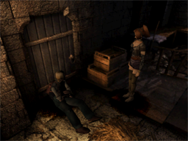
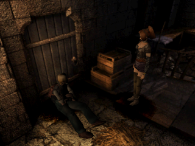
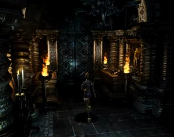
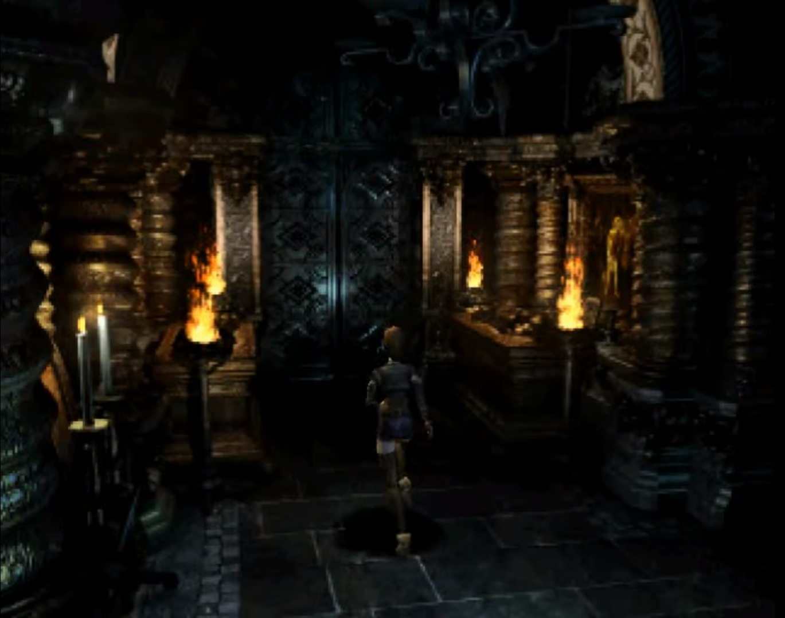

Koudelka
A unique hybrid of survival horror and turn-based RPG set in 1898 Wales at the ominous Nemeton Monastery. Three unlikely protagonists—psychic medium Koudelka, adventurer Edward, and Vatican Bishop James—investigate the monastery's dark history. Features Resident Evil-style exploration with fixed camera angles and pre-rendered backgrounds, combined with grid-based tactical combat. Predecessor to the Shadow Hearts series and a cult classic.
.png)
| Platform | Sony PlayStation |
|---|---|
| Genre | Survival Horror RPG |
| Released | |
| Developer | Sacnoth |
| Publisher | SNK / Infogrames |
| Available | PlayStation |
Where to Play
About This Game
Koudelka was the debut title from Sacnoth, a studio founded in 1997 by Hiroki Kikuta after his departure from Square, where he had composed the beloved soundtracks for Secret of Mana and Seiken Densetsu 3. Set in 1898 Wales, the game takes place entirely within the Nemeton Monastery—a real location reimagined as a gothic horror setting crawling with Lovecraftian monstrosities. Kikuta wanted to blend survival horror atmosphere with RPG combat, creating something that felt like a playable gothic novel.
The game's development was fraught with creative conflict. Kikuta envisioned a more action-oriented experience, but the development team pushed for traditional turn-based combat on a grid, resulting in a tonal tension between the atmospheric exploration and the slow-paced battles. Despite mixed reviews at launch, Koudelka found its audience among horror RPG fans who appreciated its mature storytelling, stunning pre-rendered backgrounds, and genuinely unsettling atmosphere. The game's legacy extends through its spiritual successor series, Shadow Hearts, which refined many of Koudelka's ideas into a more polished package while continuing its alternate-history horror setting.
Did You Know?
- Creative conflict shaped the game — Director Hiroki Kikuta wanted action-oriented combat like Parasite Eve, but the development team insisted on grid-based turn-based battles. The resulting tonal clash between atmospheric exploration and slow combat became the game's most divisive feature.
- Real-world inspiration — The Nemeton Monastery is loosely based on Llanthony Priory in Wales and draws from real Celtic and Druidic folklore. The game's historical setting in 1898 was chosen to overlap with the real-life fascination with spiritualism in Victorian-era Britain.
- Weapons break permanently — Unlike most RPGs, every weapon in Koudelka has limited durability and will shatter after enough use, forcing players to constantly scavenge new arms. This survival horror mechanic was controversial but reinforced the game's desperate atmosphere.
- Three different endings — The game features a good, bad, and normal ending determined by your relationship with the other party members. These endings also set up different narrative threads that connect to the Shadow Hearts series.
Critical Reception
Accolades
- Cult Classic Status Recognized as a hidden gem of the PS1 horror library — Retronauts, 2019
- Spiritual Predecessor Credited as the foundation for the acclaimed Shadow Hearts series — RPGFan, 2001
- Notable Soundtrack Hiroki Kikuta's score praised as one of the PS1's best original compositions — Game Music Online, 2000
Club Achievements
Other Participants
Speedrun Records
Koudelka has a small but dedicated speedrunning community. The RPG-horror hybrid's lengthy cutscenes and turn-based battles make optimization a unique challenge compared to most PS1 titles.
Soundtrack
Composed by Hiroki Kikuta
Hiroki Kikuta, famous for the Secret of Mana soundtrack, crafted a haunting orchestral score that blends gothic choral arrangements with Celtic folk influences. The soundtrack was recorded with live instrumentation and voice, giving it a cinematic weight rare for PS1 games. It remains one of the most acclaimed aspects of the game.
Notable Tracks
- Waterfall
- Requiem
- Destruction
- Patience
- Blandishment
- Ubi Caritas Et Amor
Screenshots




Screenshots via LaunchBox Games Database
If You Liked This
.png)
Sources & Attribution
- Game description and historical background adapted from Wikipedia
- Trivia sourced from developer interviews and The Cutting Room Floor
- Review scores from IGN, GameSpot, and Famitsu
- Speedrun data from Speedrun.com
- Playtime estimates from HowLongToBeat
- Screenshots and box art via LaunchBox Games Database
- Soundtrack information from KHInsider
- Pricing data from PriceCharting